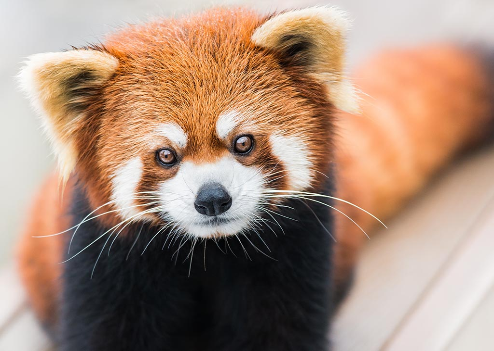
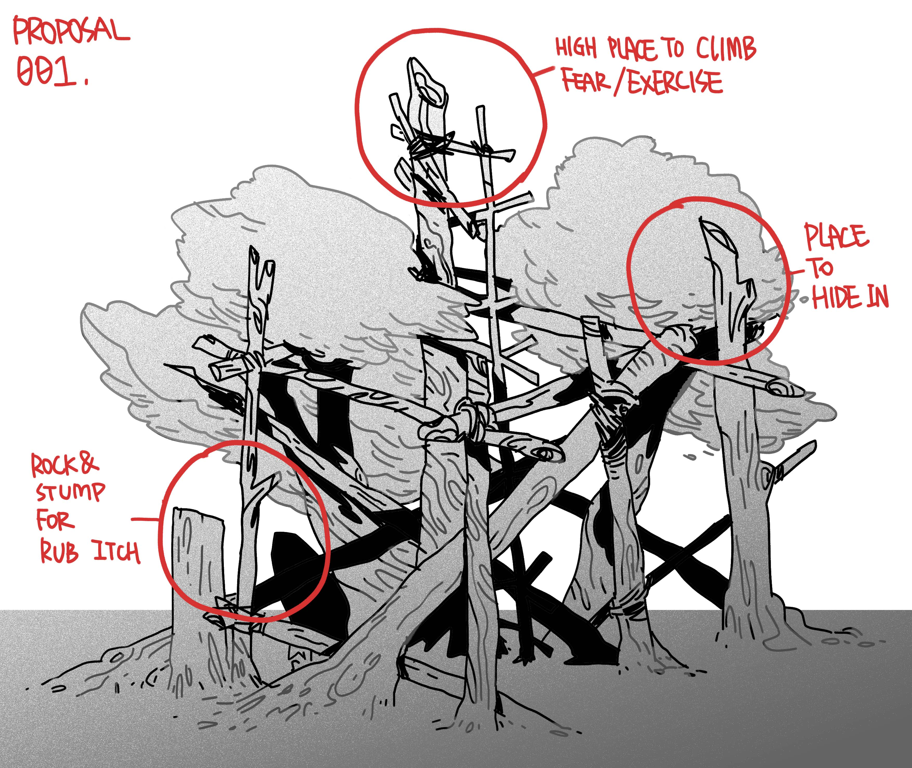
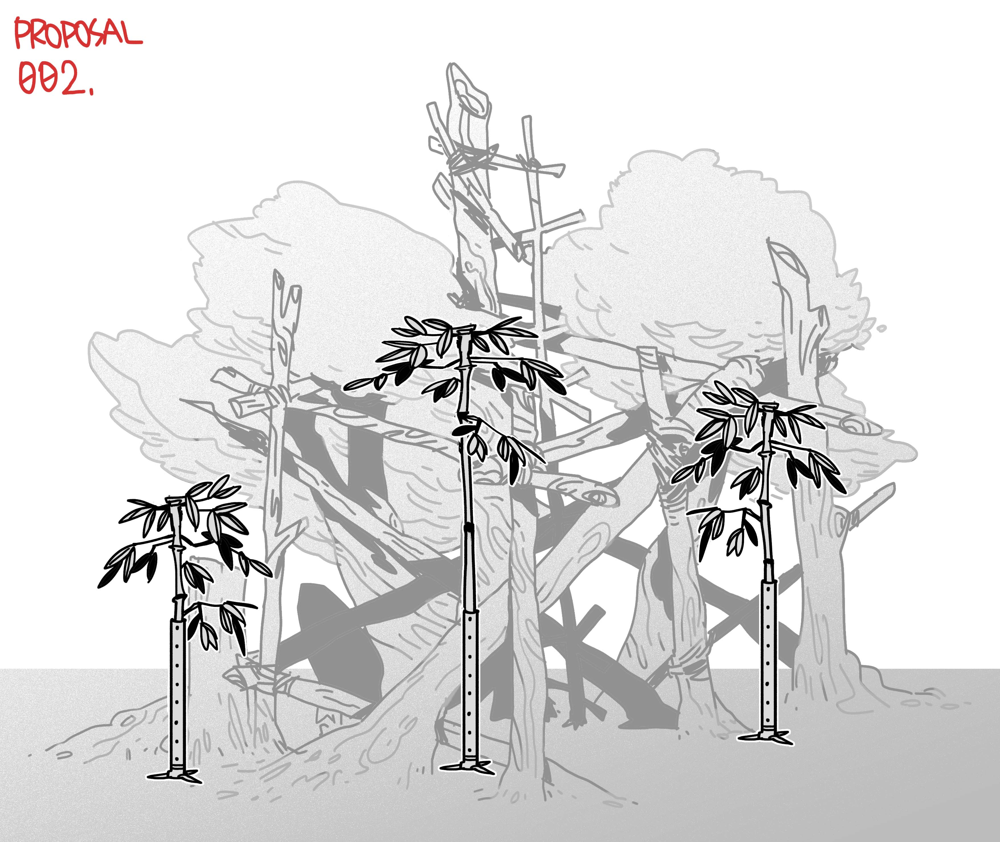

Enrichment ---- Red Panda
Yufei Zhang

Proposal One: Physical Structure of the Environment
The first proposal is the physical structure of the environment. Because climbing skill is the crucial skill for the survival of the red pandas, there must be a climbing structure in their living environment to provide opportunities for exercise. Therefore, when designing the surrounding environment, the living environment should be as wide and high as possible, so that they have enough space to climb and learn basic survival skills. Because red pandas are currently endangered, a very important part of raising red pandas will be to prepare the red pandas for future release.
At the same time, the first reaction of the red panda when it is frightened is to climb to the heights, then in order to ensure the mental health of the red pandas,there should be a high place provided for them so when they are stimulated, they can respond accordingly.
At the same time, since the red panda will rub itch on stumps or stones in daily life, the corresponding elements should be provided in the living environment. At the same time, in order to prevent stereotypies, it should be provided with shades to provide a hidden place for avoiding external stimuli such as tourists.
Proposal Two: Feeding Method 
The second proposal is feeding method. Because the Red panda's original way of eating is to climb through to find delicate bamboo leaves. So I designed these brackets that can hold bamboo, which can be placed and adjusted in height. By combining these devices with previously available red panda climbing devices, this feeding method also allows the red panda to learn how to climb and forage.
But there are still things be aware of, because red pandas can't digest cellulose, so they need to eat a lot of food and the amount of energy they can spend in forgaing is not too many, so people should be careful to the area where these foods are distributed and how hard it would be for red-panda to find them. It is necessary to prevent the red panda from health level declining due to excessive energy consumption.
Experts
-
Angela Glatston
- Angela chairs the Red Panda Network (RPN) Board of Directors. She joined the board of RPN in 2014. Angela is a trained zoologist with a strong interest in animal behavior, in particular the impact of environmental factors on reproduction and maternal behavior. She got her PhD on behavior and reproduction in mouse lemurs from University College London.
2019/2/18
- Angela chairs the Red Panda Network (RPN) Board of Directors. She joined the board of RPN in 2014. Angela is a trained zoologist with a strong interest in animal behavior, in particular the impact of environmental factors on reproduction and maternal behavior. She got her PhD on behavior and reproduction in mouse lemurs from University College London.